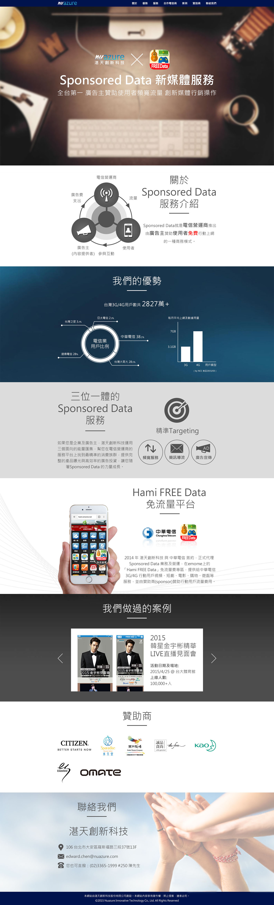
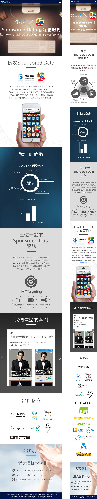

此作品在第一屏就讓使用者知道湛天創新科技提供的是一個專業服務，以藍灰白為主色顯得沉著穩重且科技感。在UI操作方面，點選上方選單，即可跳到此內容位置，按公司LOGO即可置頂，讓使用者在瀏覽頁面時可以輕鬆操作網頁。
This portal provides professional and premium impressions to users by blue-gray-white color and easy-to-access interfaces.
 Go to website：http://freedata.com.tw/